联系条 · 配色与背景色改造
结论：原来那条的问题不是「颜色没调好」，是 背景没有层次、空态两副面孔。改后：容器给品牌氛围底 + 左侧品牌竖条，四个通道各拿自己的颜色，空态统一成冷调浅底实线边。
改动只落在两处文件：frontend/index.html（联系条与按钮的样式规则原地改写）、frontend/src/prototype-api.ts（详情页按钮补齐 is-empty 类，消除空态双面孔）。
1 · 原来到底丑在哪
| 问题 | 具体表现 | 改法 |
|---|---|---|
| 容器平、没层次 | 整条是 var(--surface) 纯白，和下面的表格同一个底色，点出来像「表格上方多了一块白」。 |
品牌浅色氛围底（左浓右淡）+ 左侧 3px 品牌竖条 + 圆角 10→12 |
| 空态两副面孔 | 列表页空态是虚线框 + 白底；详情页「电话 / 微信」空态却是灰色实线框（模板漏加 is-empty，落到基础态）。同一套按钮，两种长相。 |
基础态直接按空态写；模板补齐 is-empty，双保险 |
| 空态发虚 | 旧版本用 opacity:.5 压暗，实测文字只剩 rgb(179,187,185)，边框几乎看不见，整条像没加载完。 |
去掉 opacity，改冷调浅底 #f5f7fb + 实线边 #e5ebf4 + 中性字 #93a1b5 |
| 四个通道一个颜色 | 不管邮箱、电话、WhatsApp 还是微信，有值都是同一个品牌色。扫一眼分不出哪个通道有资料。 | 通道分色：邮箱靛蓝 / 电话青 / WhatsApp 绿 / 微信深绿 |
| 禁用光标用错 | 空态按钮写死 cursor:not-allowed，但它其实可点（点了是「补录该通道」）。 |
只有真 disabled 才禁用光标；空态给正常可点反馈 |
2 · 前后对照（同机位、同数据行）
先看按钮特写
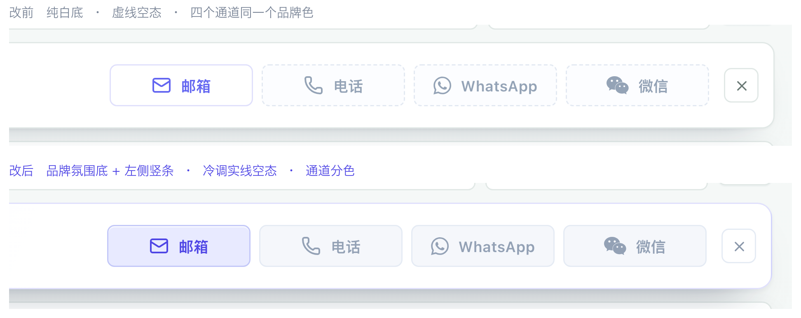
一眼能看出两件事：① 空态从虚线 + 白底变成冷调浅底 + 实线边，不再发虚；② 「邮箱」由白底描边变成通道浅底，颜色从「统一品牌色」换成「各通道自己的颜色」。
客户管理 · 完整联系条
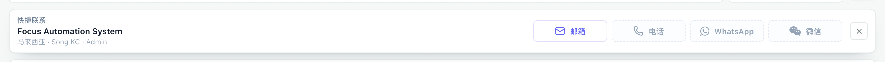
线索 · 完整联系条
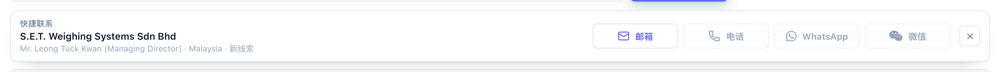
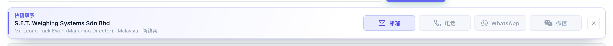
客户全景 · 联系中心按钮组
这一组是「空态两副面孔」最明显的地方：改前「邮件」是浅色实底、「电话 / 微信」是灰色实线、「WhatsApp」是虚线 —— 三种长相挤在一起。改后全部收敛成两种：有值 = 通道浅底，空态 = 冷调浅底。
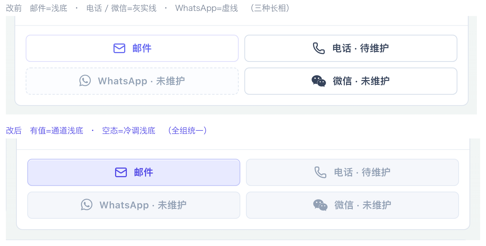
3 · 配色方案：每个通道自己的颜色
| 通道 | 主色 | 浅底 |
|---|---|---|
| 邮箱 | #4f46e5 | #e8eaff |
| 电话 | #0c736a | #ddf3f0 |
| #12733e | #ddf3e6 | |
| 微信 | #0a6435 | #dcf0e4 |
为什么通道色不跟主题走
WhatsApp 是绿的、微信是绿的，这是品牌语义，换了主题也不该变成玫红。所以通道色写成固定值；主题跟随交给外层容器（氛围底、左竖条、「快捷联系」标签都吃 var(--brand)）。这样切主题时整条联系条的调性跟着变，通道色仍是识别标记。
四个通道全有值时（极端情况）
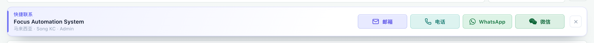
4 · 交互与主题
#fff on #4f46e5，实测取自计算样式）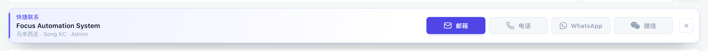
主题跟随（容器吃品牌变量，通道色不变）
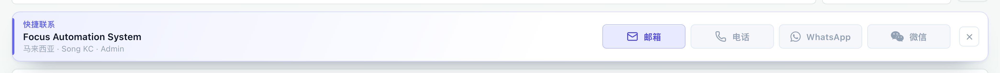
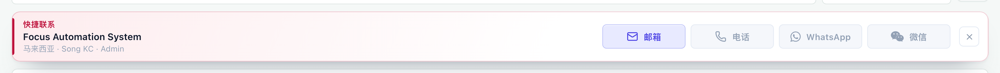
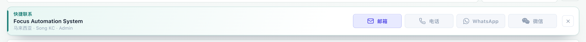
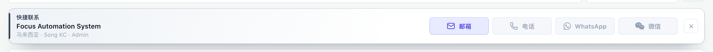
实测取值：容器渐变底分别为 #eef0ff / #fdecee / #e7f6f3 / #eef2f6，左竖条与「快捷联系」标签同步换色；通道色保持各自固定值。
5 · 另外两套没采用的方案
三套都做了真实渲染对比，最终采用上面那套（通道分色）。另两套的成品图也留着 —— 想换一句话的事。
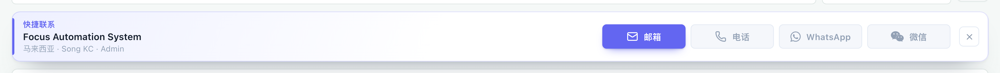
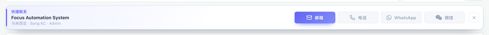
没选 P1 / P3 的原因：详情页那组按钮是 2 列大按钮，实心色块铺满后整块显得笨重（下图），而列表页又只有 1–2 个通道有值，实心反而浪费了「颜色区分通道」这个机会。
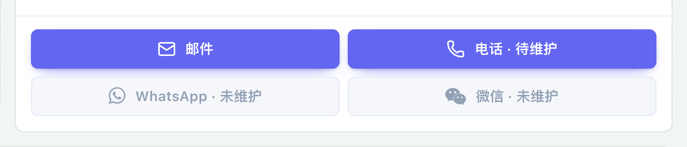
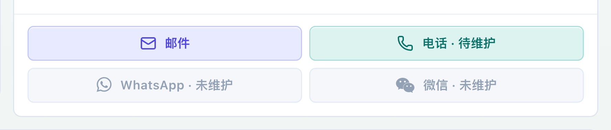
6 · 验证
- ✓
tsc --noEmit通过 - ✓ 前端自测
npx tsx src/self-test.ts— 174 / 174 - ✓ 客户管理 / 线索两个列表页实跑点行触发联系条（dev 5298，API 代理到后端 4188）
- ✓ 有值态悬停取计算样式：常态
rgb(232,234,255)浅靛蓝底 → 悬停rgb(79,70,229)实底 + 白字 - ✓ 四个主题（晨白 / 玫红 / 青松 / 板岩）下容器氛围色均跟随
- ✓ 详情页 4 个按钮在「有值 / 空值」两种组合下长相统一，不再出现虚线 + 实线混排
7 · 改了什么（可核对）
| 文件 | 改动 |
|---|---|
frontend/index.html约 10985–11090 行 |
· .customer-contact-action 基础态改写为「空态」长相（冷调浅底 + 实线边）· 新增 4 条通道色变量（ --ch / --ch-bg / --ch-bd）· .is-ready 改通道色浅底，.is-ready:hover 反转为实底白字· .is-empty 去掉虚线与 opacity；cursor 拆给 :disabled· .contact-dock 容器：品牌渐变底 + 12px 圆角 + ::before 左侧竖条· 「快捷联系」标签改 var(--brand)；关闭键改透明底融入容器
|
frontend/src/prototype-api.ts约 16018–16021 行 |
详情页 4 个联系按钮的 ${ 有值 ? "is-ready" : "" } 补齐为 : "is-empty" |
两处都是原地改写，没有新增覆盖块。未提交，等 SVN 备注。
8 · 顺手记录（未动）
- 客户公池页点行不出联系条（有数据行但无 dock）—— 既有问题，与配色无关。
- 线索页
#leadNewButton/#leadCreateForm在源码中无任何引用，点击无反应 —— 既有问题。